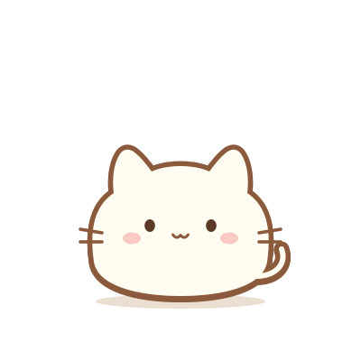
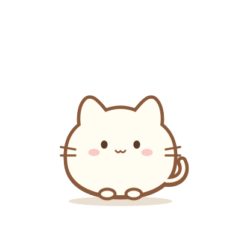
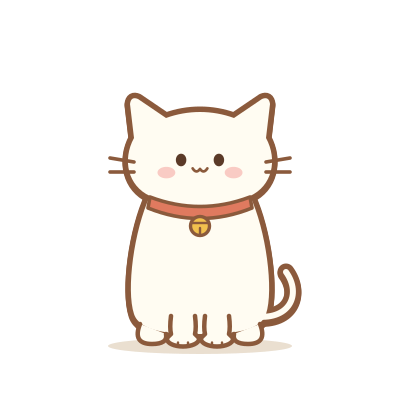
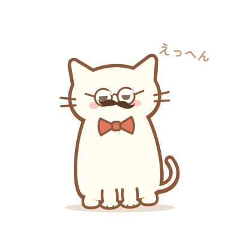
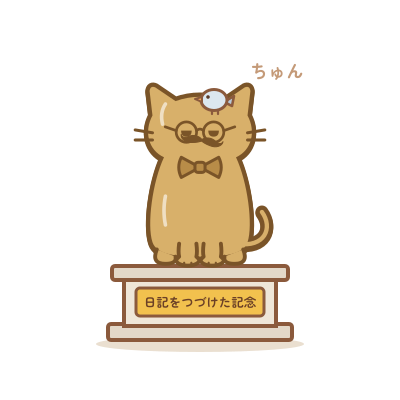

2026年11月10日（火）
今日はどんな一日だった？きかせて！
今日あったこと、思ったことを書いてみよう
スマホ（幅 375px）での見た目。絵は開発者が描いた public/characters/stage-1〜5.svg をそのまま表示している（このファイルを docs/aidlc/character-evolution/ に置いたまま、ブラウザで開くと見られる）。 ボタンなどは見た目だけで、押しても動かない。
レベルで段階が決まる（AC-1）。名前はステータスとお知らせに出す





ステータスの絵と段階の名前（AC-1）。吹き出しの横も今の段階の絵（AC-2）
段階ごとに絵の余白を切り取り、枠いっぱいに出す。点線が枠。キャラクターがはみ出していないかを確かめる
※ ステータスと同じ 64 画素で、同じ切り取り方で表示している
段階が変わるレベルに上がったときだけ、いつものレベルアップのお知らせの代わりに出す（AC-6）。「とじる」にフォーカス（AC-10）
キャラクターがまだいないので、段階 1 の絵（AC-3）
レベルが下がり、前の段階に戻るときだけ「すがたも前にもどるよ。」を足す（AC-12）
段階 1 の絵を小さくして使う（AC-13）。明るいタブと暗いタブで見え方を確かめる